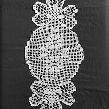

Croşetarea se aplică la împodobirea unor ţesături de lînă, cînepă, in, bumbac, mătase la finisarea marginilor şi la crearea de noi ţesături croşetate ajurat.Împletitul horboţelelor sau croşetarea este o modalitate tehnico-decorativă de împodobire a produselor ţesute de uz casnic şi de înfrumuseţare a locuinţei, de decorare a pieselor vestimentare şi de ritual.În arta croşetării sînt cunoscute multe metode de executare a horboţelelor, care se bazează şi se execută după scheme alcătuite din semne convenţionale. La baza modelelor stă: „lănţişorul”, „picioruşele” şi „ochiurile libere” ș.a. Cele mai simple module sau metode de croşetare constituie: ochiurile libere, semipicioruşele, picioruşele fără jeteu, picioruşul fără jeteu cu ochi liber, semipicioruşul cu jeteu, picioruşul cu jeteu, picioruşul cu jeteu şi ochi liber, picioruşul cu două şi trei jeteuri, frunzuliţa, picioruşul înfoiat, moviliţa, semiinelul, inelul şi etc.
La croşetare se lucrează cu croşeta, a cărei grosime se deosebeşte după numere.
Broderia este o modalitate tehnico-decorativă de împodobire a ţesăturilor cu acul şi aţa. Tradiţiile ei sunt de mare vechime în Moldova.Broderia se realizează cu acul, deci este un procedeu tehnico-decorativ de înfrumuseţare a ţesăturilor, a pieselor vestimentare din ţesătură, piele.Multe din acestea se înfrumuseţau prin broderie: Cămaşele femeieşti şi cele bărbăteşti, prosoapele de nuntă.
Crosetarea, cunoscuta din timpuri straveci, s-a dezvoltat pe parcursul secolilor, devinind în zilile noastre una dincele mai îndragite hobi a femeilor ce se ocupa cu lucrumanual..Arta de a croşeta oferă posibilitatea de a utiliza o gamă bogată de îmbinări de laţuri din firul de aţă şi procedee tehnice, care oferă ca rezultat o mare varietate de noi modele a pieselor croşetate...
O origine a acestei indeletniciri nu este cunoscuta cu certitudine ,dar se crede ca tricotatul a aparut chiar in perioada dinainte de Hristos .Tricotatul probabil a fost adus din Orientul Mijlociu catre Europa prin Spania, de catre mauri.Primele obiecte de imbracaminte tricotate se pare ca au fost ciorapii.